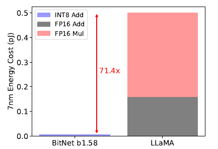
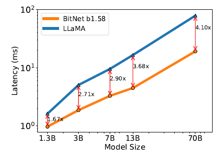
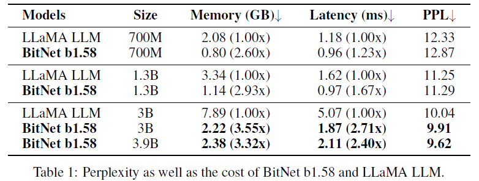
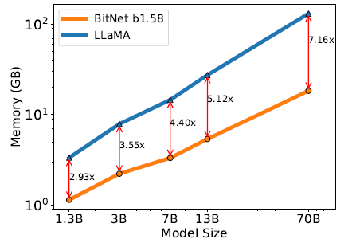
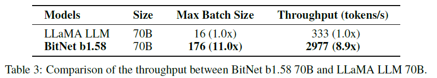
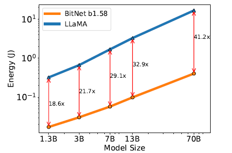
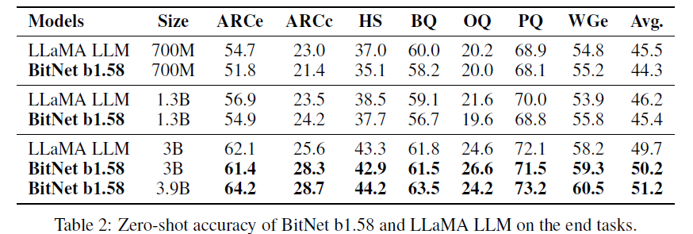
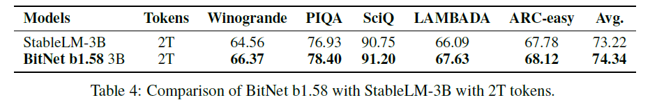

BitNet_paper
BitNet解读
这是论文最核心的创新。不同于传统的16位浮点数权重，也不同于后训练量化（如4-bit, 2-bit）或之前的1-bit二值（±1）模型，BitNet b1.58 首次成功地将LLM的所有权重约束到仅取 {-1, 0, +1} 三个值。这个“0”的引入是关键突破。
核心思想与核心贡献（创新点）
三值 (1.58-bit) 权重量化
这是论文最核心的创新。不同于传统的16位浮点数权重，也不同于后训练量化（如4-bit, 2-bit）或之前的1-bit二值（±1）模型，BitNet b1.58 首次成功地将LLM的所有权重约束到仅取 {-1, 0, +1} 三个值。这个“0”的引入是关键突破。
- 为什么是1.58比特？ 因为用二进制表示3个状态 (
-1,0,1) 理论上需要log2(3) ≈ 1.58比特。这比16-bit FP16小了约10倍，比8-bit INT8小了约5倍，比4-bit小了约2.5倍。 - “0”的重要性： 引入零值 (
0) 提供了显式的特征过滤能力。权重为0意味着该连接被完全关闭，这赋予了模型更强的表达能力和稀疏性（虽然是非结构化稀疏），显著提升了1-bit级别模型的建模能力，使其最终能达到FP16基线的性能。
性能匹配全精度模型
论文通过严谨的实验证明，从3B模型规模开始，BitNet b1.58 在困惑度 (Perplexity, PPL) 和各种下游任务 (End-task Performance) 的零样本 (Zero-shot) 准确率上，能够匹配甚至略微超越相同模型大小、相同训练数据量的全精度（FP16）LLaMA基线模型。这是低比特模型发展史上的一个里程碑，证明了1.58-bit模型在保持高性能上的可行性。
革命性的效率提升
BitNet b1.58 带来了全方位的效率优势，这是其最具吸引力的地方：
计算效率 (Latency)： 矩阵乘法 (
nn.Linear) 是LLM计算的核心。FP16模型需要昂贵的浮点乘加运算 (FP16 Multiply-Add)。而BitNet b1.58 的权重是{-1, 0, +1}，其矩阵乘主要转化为**整数加法 (INT8 Addition)**：权重
-1或+1：只需对激活值进行累加或累减（本质是加法）。权重
0：直接跳过计算。几乎消除了乘法操作！ 这在硬件层面极其高效。
如图3所示，在7nm工艺下，其矩阵乘算术操作能耗比FP16低 7.14倍。如表1所示，3B BitNet的推理延迟比3B FP16 LLaMA 快2.71倍。
图2显示，随着模型增大（到70B），速度优势更加显著（快4.1倍）。
内存效率 (Memory)： 三值权重本身存储开销极小（1.58 bits/weight）。更重要的是，降低了内存带宽需求。加载权重从DRAM到计算单元（如SRAM）是推理瓶颈。BitNet b1.58 极小的权重位宽显著减少了数据传输量和时间。
表1所示，3B BitNet的GPU内存占用比FP16 LLaMA的GPU内存减少了72%。
图2显示内存节省随模型增大而增加。
吞吐量 (Throughput)： 低内存占用和高计算效率共同作用，使得BitNet b1.58 在固定硬件（如GPU）上能运行更大的批次，即Batch Size。
表3所示，70B模型在两块A100上，BitNet b1.58 的最大批次大小是FP16 LLaMA的 11倍，最终吞吐量达到 8.9倍。
能耗 (Energy)： 计算和内存效率的提升直接转化为能耗的显著降低。
图3所示，BitNet b1.58 的端到端能耗远低于FP16基线，且模型越大，优势越明显（70B BitNet能耗远低于13B FP16 LLaMA）。
新的缩放定律
论文第5页（图2, 图3及文字）提出了基于BitNet b1.58效率优势的新模型缩放等价关系：
- 13B BitNet b1.58 在延迟、内存和能耗上比 3B FP16 LLM 更高效。
- 30B BitNet b1.58 比 7B FP16 LLM 更高效。
- 70B BitNet b1.58 比 13B FP16 LLM 更高效。
- 这意味着，为了达到特定的性能水平，选择训练一个更大的BitNet b1.58模型，相比训练一个更小的FP16模型，在推理时成本更低、速度更快。这颠覆了传统“更大模型必然更慢更耗能”的认知，为未来高效大模型的设计提供了新的指导原则。
新的计算范式 & 专用硬件呼吁
BitNet b1.58 的计算核心是基于三值权重的整数加法，这与传统FP/INT乘加计算截然不同。论文（引言、图1、第6页）强烈呼吁，这种新范式为设计专门优化1-bit (或极低比特) LLM的硬件（如新型AI加速器，文中提到类似Groq的LPU概念）打开了大门。这类硬件可以彻底移除昂贵的乘法器，专注于超高效的整数加法阵列和超宽低精度数据通路，潜力巨大。
论文其他重要部分的深入解释
模型架构
- 基础： 基于Transformer，核心是用
BitLinear层替换标准的nn.Linear(全连接层)。 - 权重量化函数 (Quantization Function - Key Detail!): 这是实现三值权重的核心算法。
- 采用
absmean量化：γ = (1/nm) * Σ|W_ij|(公式3), 即权重矩阵绝对值的平均值。 - 归一化：
W' = W / (γ + ε)(ε 防止除零)。 - 三值化：
W̃ = RoundClip(W', -1, 1)(公式1, 2)。RoundClip将值约束在[-1,1]区间并四舍五入到最近的整数 (-1,0,+1)。这个过程在训练中应用（Straight-Through Estimator, STE 用于梯度回传，文中虽未详述但应如此）。
- 采用
- 激活量化 (Activation Quantization): 激活值量化为8-bit整数 (INT8)。与原始BitNet不同，它将每个token的激活值统一缩放到
[-Qb, Qb]范围。这样做是为了消除零点 (Zero-Point) 量化（常见于非对称量化如INT8），简化了实现和系统优化，且实验证明对性能影响可忽略。 - 组件兼容性 (LLaMA-alike Components): 为了无缝融入开源生态（Hugging Face, vLLM, llama.cpp），BitNet b1.58 采用了LLaMA的标准组件：RMSNorm, SwiGLU, Rotary Embeddings, 并移除了所有偏置 (Biases)。这大大提升了其可用性和部署便利性。
实验结果
这是论文的实证核心，用大量数据支撑前述创新点。
设置： 在RedPajama数据集上预训练100B tokens。对比模型是作者复现的FP16 LLaMA。
性能指标：
困惑度 (PPL):
PPL源于信息论中的概念，它衡量的是语言模型分配给一个测试序列的概率分布的“质量”。其直观意义是模型在预测下一个词时，它有多少个“等可能的候选词”需要犹豫。PPL 的数值大致可以理解为模型在预测下一个词时的平均分支因子。一个PPL=50的模型意味着，在预测每个词时，模型感觉平均有50个 词看起来可能性差不多大（或者说，它在这个“词汇分支树”上平均有50个可能的分支），表明模型对文本序列的预测确定性较低。一个PPL=20的模型则意味着预测每个词时，模型感觉平均只有20个词的可能性差不多大，表明模型的预测确定性更高。PPL值越低越好！ PPL越低，表示语言模型对测试文本序列的预测越准确、越有信心、不确定性越低。表1显示，3B BitNet b1.58 的 PPL=9.91 优于 3B FP16 LLaMA 的 PPL=10.04。更大的3.9B BitNet (PPL=9.62) 优势更明显。
下游任务 (Zero-shot Accuracy)
表2显示，在3B规模，BitNet b1.58 在7个任务中的6个上达到或超越FP16 LLaMA，平均分略高 (50.2 vs 49.7)。3.9B BitNet 全面超越3B FP16 LLaMA (51.2 vs 49.7)。以上测试指标均为准确率
任务简称 全称 核心能力评估点 选项类型 数据来源/特点 ARCe ARC-Easy 基础科学知识、简单推理 多项选择 (单选) 小学科学题 (易) ARCc ARC-Challenge 复杂科学推理、深入理解 多项选择 (单选) 小学科学题 (难) HS HellaSwag 常识推理、情境建模 多项选择 (单选) 日常/视频情境续写 BQ BoolQ 阅读理解、文本蕴含判断 二分类 (是/否) 维基百科段落+问题 OQ OpenbookQA 知识检索、科学事实推理 多项选择 (单选) 开放域科学问题 PQ PIQA 物理常识推理 二选一 (方法选择) 日常物理操作场景 WGe Winogrande (XL规模) 指代消解 (需常识) 二选一 (名词指代) Winograd Schema
效率指标： 如前所述，内存、延迟、能耗、吞吐量全方位显著提升，且优势随模型规模增大而放大。图3的能耗分解图直观展示了INT8加法主导的计算如何大幅节省能耗。
长训练令牌：
表4展示了BitNet b1.58 3B在2T tokens上训练后，在多个任务上全面超越同样训练2T tokens的最新开源模型 StableLM-3B。这强有力地证明了1.58-bit LLM不仅能在标准训练量下匹配FP16，在更大数据量下具备更强的泛化能力和潜力。
未来方向与影响
论文展望了BitNet b1.58 开启的广阔前景：
- 1-bit MoE LLMs: 混合专家模型(MoE)本身旨在提升效率（计算FLOPs），但其高内存和通信开销是瓶颈。1.58-bit 权重能极大缓解MoE的内存和跨设备通信负担，甚至可能实现单芯片部署整个MoE模型。
- 原生支持长序列 (Native Long Context): 处理长序列的关键瓶颈是存储历史信息(KV Cache)的内存。BitNet b1.58 的 8-bit 激活值 相比FP16直接节省一半KV Cache内存，在相同资源下上下文长度可翻倍。论文指出，未来可进一步无损压缩激活值到4-bit或更低，潜力巨大。
- 边缘与移动端部署 (Edge & Mobile LLMs): 极低的内存占用和能耗，以及对CPU友好（主要依赖加法）的特性，使得BitNet b1.58 成为在资源受限的边缘和移动设备上部署强大LLM的理想选择，开启全新的应用场景。
- 1-bit LLM 专用硬件 (Dedicated HW): 再次强调新计算范式（整数加法为主）对设计颠覆性硬件（移除乘法器，超宽低精度数据通路）的呼唤。这可能是实现终极效率的关键。
总结与评价
这篇论文标志着大语言模型发展的一个重大转折点，通过其创新的三值 (1.58-bit) 权重量化方案，首次在3B及以上规模实现了与全精度模型匹敌的性能，同时带来了数量级级别的效率提升（计算延迟、内存占用、能耗降低、吞吐量提升）。它不仅仅是一个高效的模型变体，更定义了一种新的缩放定律（大而高效的1-bit模型优于小而昂贵的FP模型），并呼唤着新一代硬件计算范式，其深远影响在于：
- 大幅降低LLM的部署和运行成本： 使更大、更强的模型能在更广泛的设备（从云端到边缘）上经济高效地运行。
- 推动LLM的普及化： 让高性能LLM更易于被研究机构、中小企业甚至个人开发者使用。
- 激发硬件创新： 为AI芯片设计开辟了全新的方向，专注于超低精度、高并行加法运算。
- 奠定未来高效LLM基础： BitNet b1.58 很可能成为未来追求极致效率的LLM研究和应用的基础架构或重要参考。